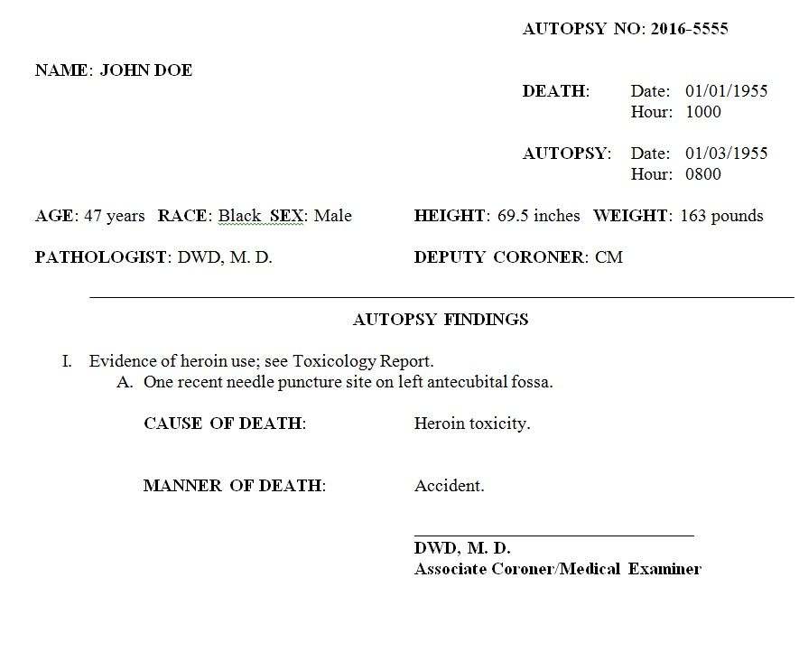

Welcome to the Forensic Autopsy Report Error Catcher
Instructions for use.
Depending on the case scenario, you may want to click on one of the search modules (i.e. gunshot).
Simply copy-paste the report into the text field and click submit. Errors will be displayed below.
You may need to modify our code on GitHub for your report to work properly. You will need a GitHub account to submit a pull request and "Fork" the webpage. Our cases have the following first page:

About the authors:
Matthew D. Cain, M.D.
Dr. Cain is currently a Forensic Pathology Fellow at the University of Alabama at Birmingham. He has an interest in combining the tools of Informatics to the field of Forensic.
Daniel W. Dye, M.D.
Dr. Dye is currently an Associate Medical Examiner and Forensic Fellowship Director at the University of Alabama at Birmingham.